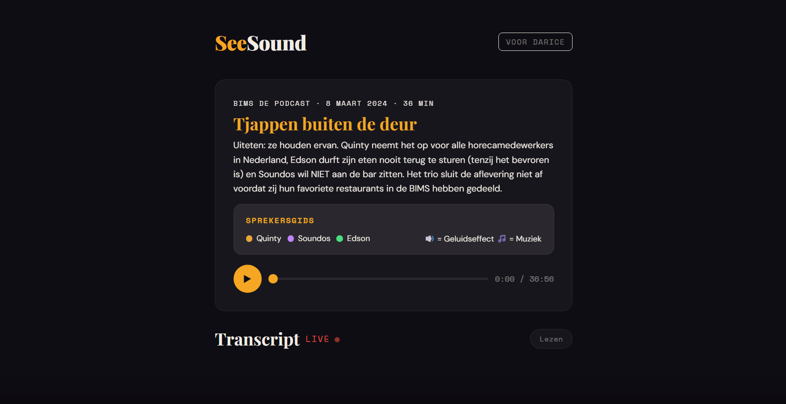
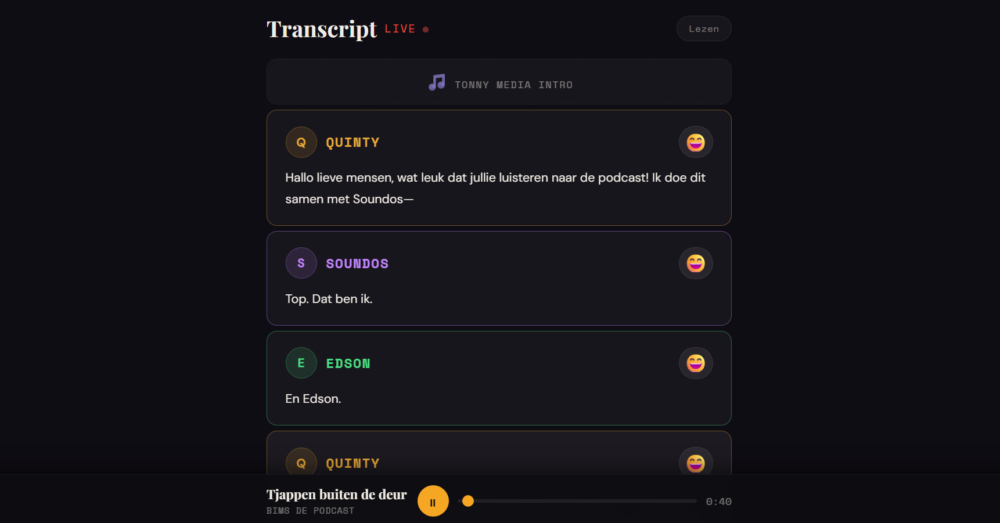

SeeSoundHuman-centered design.


This project came out of the Human Centered Design course, where I designed for one real person: Darice, who's deaf and wanted a better way to actually experience podcasts, not just read them. The challenge was turning audio into something visual, capturing not just what's being said but the emotion, atmosphere, and important sounds happening underneath it. Since I was designing around one specific person the whole time, accessibility wasn't an add-on, it was basically the entire brief.
I started with research, brainstorming, and a lot of sketching. I tried out ideas like color-coded emotions, dynamic background colors, sound indicators, and haptic feedback for key audio moments, all aimed at making podcasts feel more alive without leaning on plain subtitles.
The first prototype I showed Darice had way too much going on. She liked the idea, but all the colors, animations, and moving pieces together felt overwhelming, and she also wanted more control: a way to turn features off, and to switch between following along live and just reading at her own pace. That one testing session basically reset the direction of the whole project.
So I simplified, a lot. Color-based emotion indicators became simple emoji instead, easier to read at a glance without adding visual noise. Darice had also had a seizure in the past, so I stripped out anything that could flash or distract, keeping the whole interface calm and comfortable to sit with.
From there it was a lot of small iterations based on direct feedback: bigger text, better contrast, clearer ways to tell speakers apart in the transcript, and a sticky media player that stays visible while scrolling so she never loses her place. The biggest addition though was a dedicated reading mode, letting Darice go through the transcript at her own pace instead of being locked to real time, a feature that came straight out of her feedback.
This project really drove home what human-centered design actually means. Designing for one specific person meant dropping my assumptions and building around her needs instead of my own ideas of what would look good. I also learned that simplifying is usually the better move over piling on more features, and that every decision holds up a lot better once it's actually been tested with a real user.